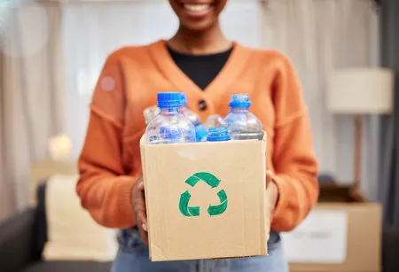
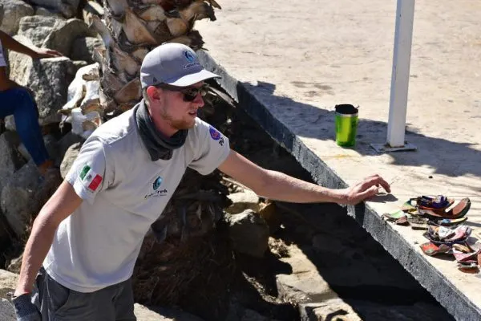
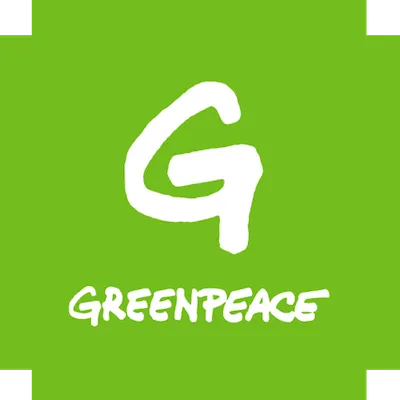
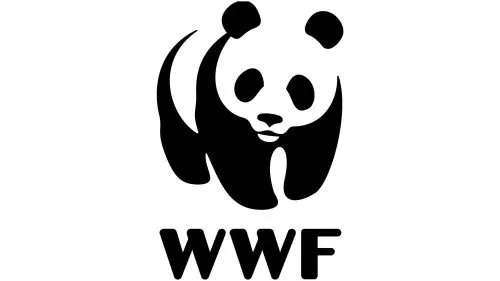
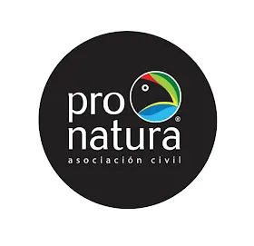

📊 Impacto Real de Nuestra Conciencia Marina

0
Playas Limpias
0
Tortugas Rescatadas

0
Toneladas de Plástico Retiradas

0
Voluntarios Activos
Playas Limpias
Tortugas Rescatadas
Toneladas de Plástico Retiradas
Voluntarios Activos
Interactúa con los puntos para conocer la situación actual.

"Gracias a Conciencia Marina aprendí a reducir mi plástico en casa."
- Ana P.
"Participar en limpieza de playas cambió mi visión sobre el océano."
- Carlos M.

